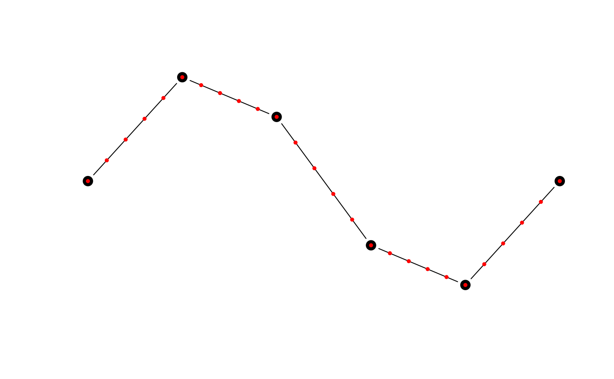
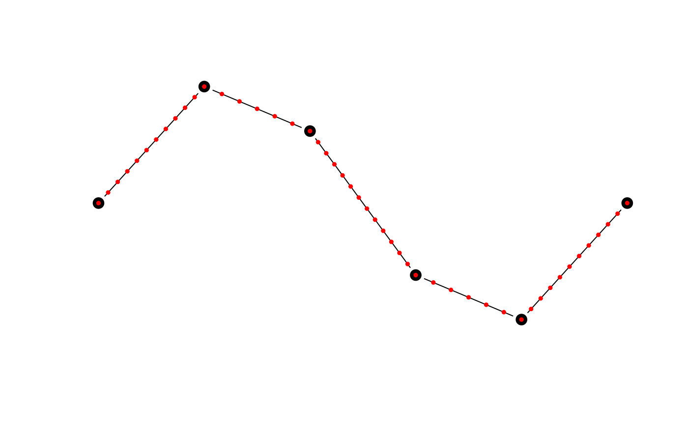
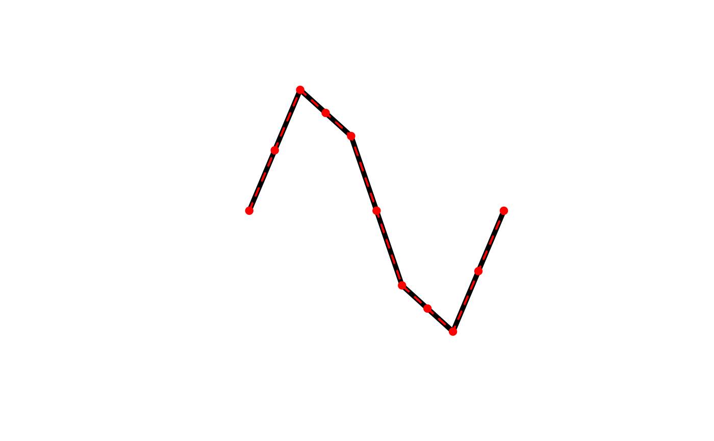

This function adds additional vertices to lines or polygons via linear interpolation, always while keeping the original vertices. Each line segment will be split into equal length sub-segments. This densification algorithm treats all vertices as Euclidean points, i.e. new points will not fall on a great circle between existing vertices, rather they'll be along a straight line.
smooth_densify(x, wrap = FALSE, n = 10L, max_distance)numeric matrix; matrix of coordinates.
logical; whether the coordinates should be wrapped at the ends, as for polygons and closed lines, to ensure a smooth edge.
integer; number of times to split each line segment. Ignored if
max_distance is specified.
numeric; the maximum distance between vertices in the resulting matrix. This is the Euclidean distance and not the great circle distance.
A matrix with the coordinates of the densified curve.
This function works on matrices of points and is generally not called
directly. Instead, use smooth() with method = "densify" to apply this
smoothing algorithm to spatial features.
# smooth_densify works on matrices of coordinates
# use the matrix of coordinates defining a line as an example
m <- jagged_lines$geometry[[2]][]
m_dense <- smooth_densify(m, n = 5)
class(m)
#> [1] "matrix" "array"
class(m_dense)
#> [1] "matrix" "array"
plot(m, type = "b", pch = 19, cex = 1.5, axes = FALSE, xlab = NA, ylab = NA)
points(m_dense, col = "red", pch = 19, cex = 0.5)

# max_distance can be used to ensure vertices are at most a given dist apart
m_md <- smooth_densify(m, max_distance = 0.05)
plot(m, type = "b", pch = 19, cex = 1.5, axes = FALSE, xlab = NA, ylab = NA)
points(m_md, col = "red", pch = 19, cex = 0.5)

# smooth is a wrapper for smooth_densify that works on spatial features
library(sf)
l <- jagged_lines$geometry[[2]]
l_dense <- smooth(l, method = "densify", n = 2)
class(l)
#> [1] "XY" "LINESTRING" "sfg"
class(l_dense)
#> [1] "XY" "LINESTRING" "sfg"
plot(l, lwd = 5)
plot(l_dense, col = "red", lwd = 2, lty = 2, add = TRUE)
plot(l_dense %>% st_cast("MULTIPOINT"), col = "red", pch = 19,
add = TRUE)
